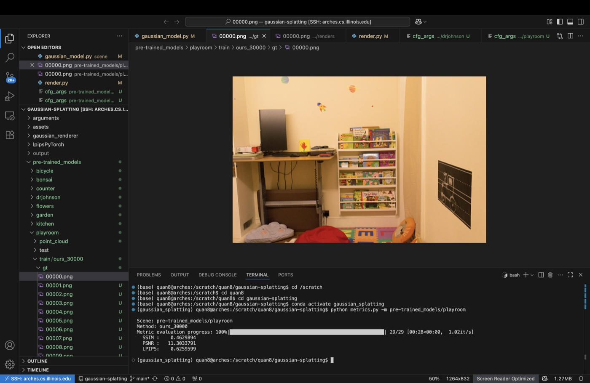
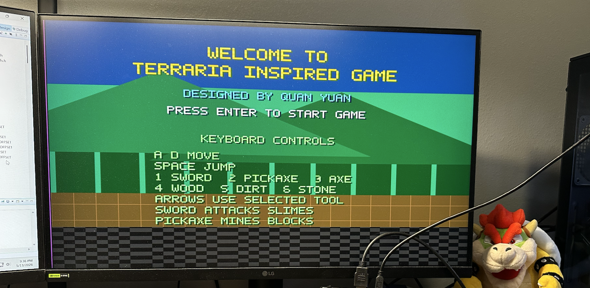
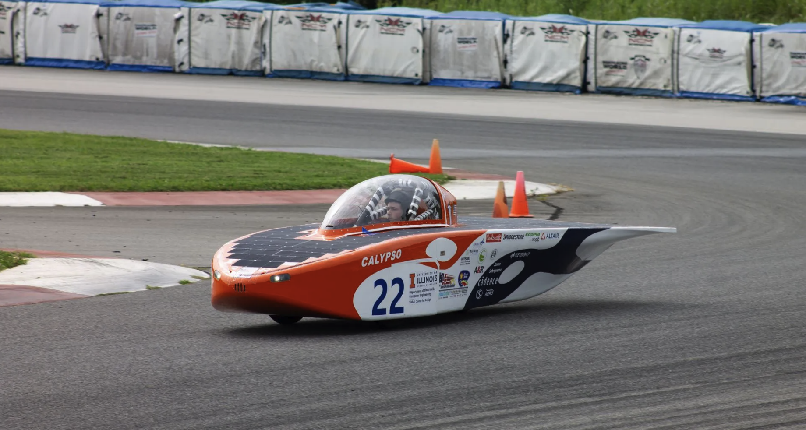

Computer Vision Research
3D Gaussian Splatting Renderer Optimization
CUDA/PyTorch pipeline for contribution scoring, GPU-side sorting, pruning, and progressive rendering.
View DetailsWelcome
I am Quan (Ethan) Yuan, a Computer Engineering student with experience across computer vision research, embedded systems, PCB design, and FPGA game development. I studied at the University of Illinois Urbana-Champaign from 2024 to 2026 and will continue my B.S. in Computer Engineering at Northwestern University in September 2026.
My work tends to sit close to the metal: CUDA/PyTorch pipelines for 3D Gaussian Splatting, embedded C++ control logic for solar car systems, SystemVerilog games on FPGA, and STM32 projects that connect sensors, actuators, and custom boards.
Research
I am interested in building intelligent systems that connect perception, robotics, and efficient computing, with work spanning:
I have research experience in computer vision and graphics, especially 3D Gaussian Splatting, where I worked on contribution-based filtering for more efficient rendering.

CUDA/PyTorch pipeline for contribution scoring, GPU-side sorting, pruning, and progressive rendering.
View DetailsBackground
Incoming Computer Engineering student in Evanston, Illinois.
Overall GPA 4.0/4.0. Dean's List and James Scholar.
Built CUDA/PyTorch contribution scoring and pruning pipelines for 3D Gaussian Splatting.
Evaluated programming assignments and exams while reviewing student code for logic errors and optimization opportunities.
Graded homework assignments and quizzes while giving feedback to help students understand core computing concepts.
Implemented embedded C++ control logic, designed and soldered PCBs, and helped integrate vehicle subsystems.
Selected Work

Side-scrolling FPGA game built with SystemVerilog, MicroBlaze C, AXI4-Lite, HDMI output, and USB keyboard input; selected for the ECE 385 Final Project Showcase.
View Details
Embedded C++ logic, custom PCBs, and subsystem integration; won 1st place in the SOV Class at Formula Sun Grad Prix 2025.
View Details
Ultrasonic distance-mapping system using a stepper motor, analog circuits, and LED matrix visualization for obstacle detection.
View Details
OLED game, Mecanum-wheel car, and magnetic levitation system with SPI/I2C, sensors, actuators, and PCBs.
View DetailsUpdates